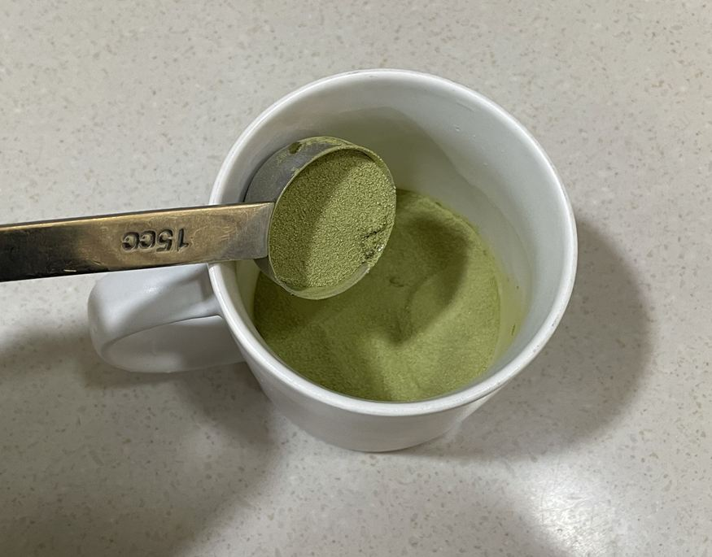
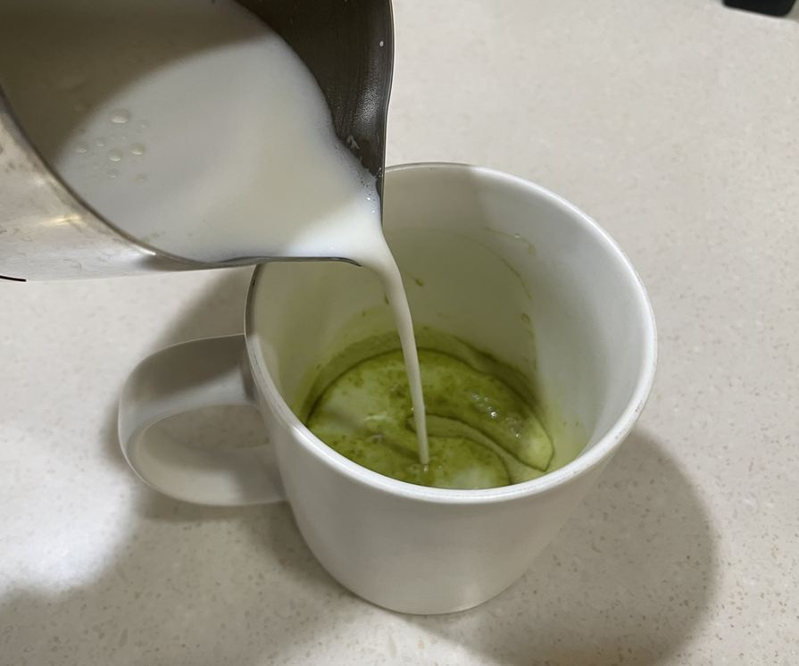
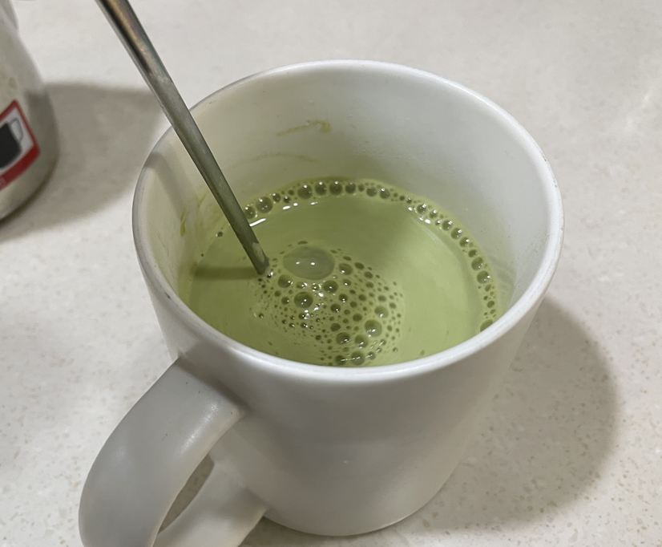
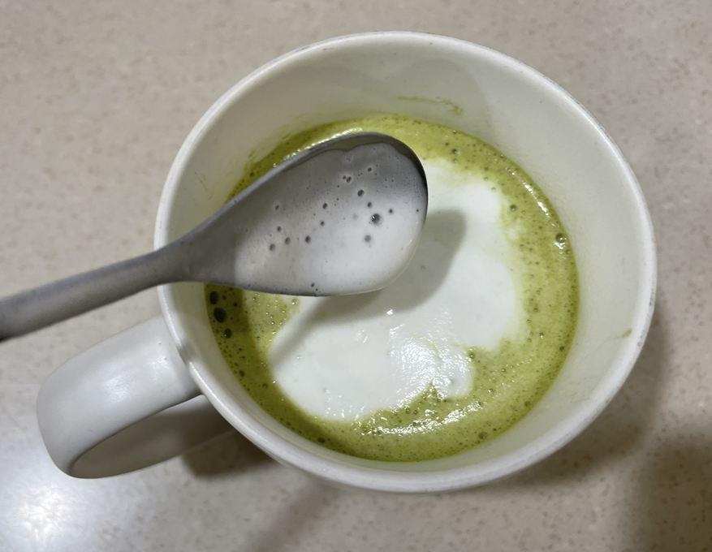
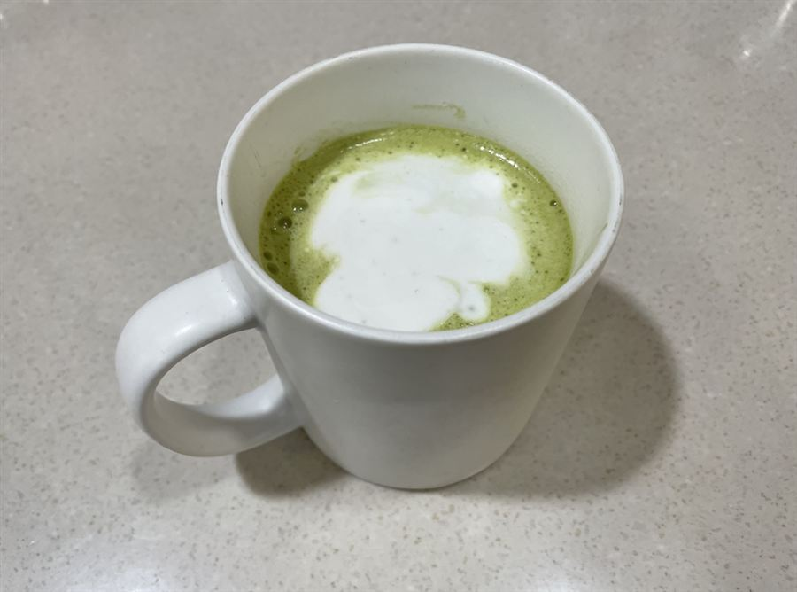

| 메뉴명 | 말차라떼 HOT |
|---|---|
| 판매가격 | 5,000원 |
| 원재료 | 말차파우더, 우유 |
| 사용 부자재 | 13oz 머그컵 또는 종이컵, 리드뚜껑, 홀더 |
※ 픽업 멘트 : "뜨거우니 조심하세요"
제조방법

1
13온스 머그컵 또는 종이컵에 말차파우더 2T(34g)을 넣는다.
13온스 머그컵 또는 종이컵에 말차파우더 2T(34g)을 넣는다.

2
피쳐에 찬우유 220g을 담고 커피머신 스팀기 또는 WPM 스팀기로 스팀 우유를 만든다.
(※우유스팀 p.16, p23 참고)
(※뜨거우니 주의할 것!)
피쳐에 찬우유 220g을 담고 커피머신 스팀기 또는 WPM 스팀기로 스팀 우유를 만든다.
(※우유스팀 p.16, p23 참고)
(※뜨거우니 주의할 것!)

3
따뜻하게 데운 스팀 우유를 부어주고 우유폼은 남겨둔다.
(※낙차를 높여 부어주면 우유가 먼저 담김)
따뜻하게 데운 스팀 우유를 부어주고 우유폼은 남겨둔다.
(※낙차를 높여 부어주면 우유가 먼저 담김)

4
파우더가 잘 섞이도록 저어준다.
파우더가 잘 섞이도록 저어준다.

5
남겨둔 우유폼을 위에 올린다.
남겨둔 우유폼을 위에 올린다.

6
완성!! 종이컵일 경우, 홀더를 끼우고 리드 뚜껑을 덮어 제공한다.
완성!! 종이컵일 경우, 홀더를 끼우고 리드 뚜껑을 덮어 제공한다.